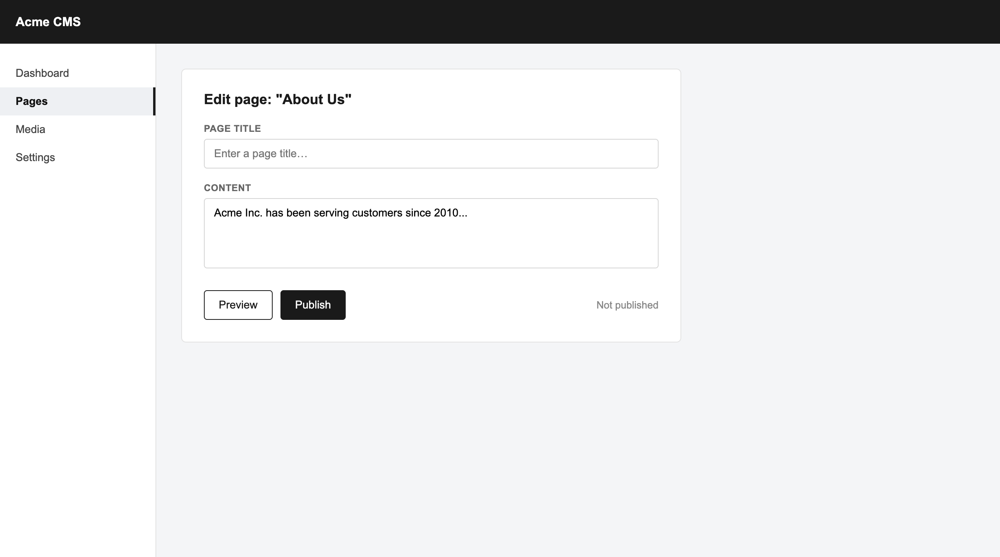
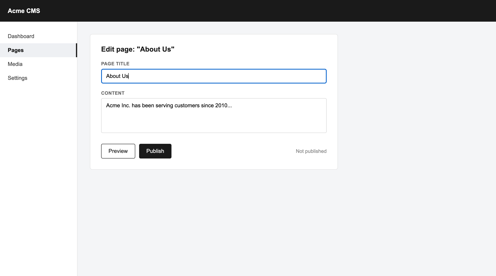
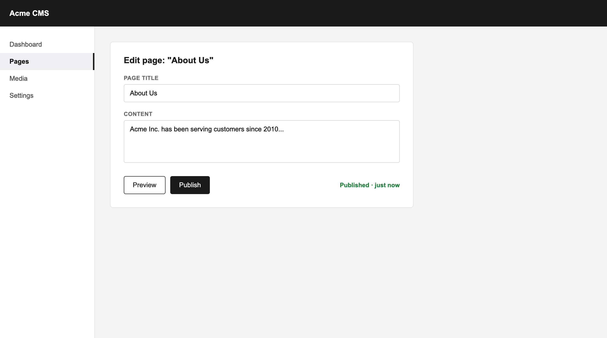

About this document
This guide walks through editing the page title and publishing the "About Us" page in Acme CMS. Screenshots below were captured directly from the live editor.
Section 1
Edit and publish the page
Open the "About Us" page in the editor
In the left menu, select "Pages", then open "About Us". The editor opens with the page title empty and the existing content below it.

The page editor, before the title is filled in
Fill in the page title
Click the "Page title" field and type "About Us". This is what visitors and search engines will see.

Page title filled in
Click "Publish"
The status next to the buttons switches from "Not published" to "Published · just now" — the page is now live.

Confirmation after clicking "Publish"
Note
This walkthrough and its screenshots were captured automatically from a live editor session as a proof of the client-docs-kit workflow — not hand-drawn placeholders.